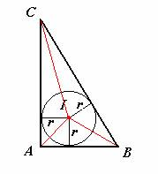

Problema 79.
| Dado el triángulo rectángulo ABC con los lados de 3cm, 4 cm y 5cm, calcular el valor del radio de la circunferencia inscrita. |
DeVincentis, J. , Sato, N., Stigant, D., Hennessy, D.y Rutherford, H.
Solución de las alumnas Maite y Alicia Peña Alcaraz del Colegio Portaceli de Sevilla (1 de marzo de 2003)

Consideremos el siguiente triánguloNo es difícil ver que el área de ACB es la suma de las áras de AIC, AIB y de BIC y si sustituimos los valores que conocemos del triángulo obtenemos
6 cm2 =4r/2 cm2+3r/2 cm2+5r/2 cm2;
De donde se obtiene que r=1 cm siendo r el radio de la circunferencia inscrita.